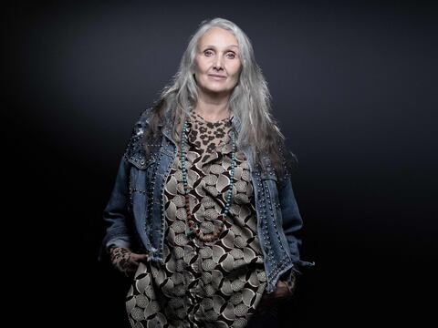

“La vuelta al mundo en 80 días a los 81 años”: Sandy y Ellie vivieron una aventura sin igual“La vuelta al mundo en 80 días a los 81 años”: Sandy y Ellie vivieron una aventura sin igual “La vuelta al mundo en 80 días a los 81 años”: Sandy y Ellie vivieron una aventura sin igual
Ambas son viudas y dedicaron este gran viaje a la memoria de sus esposos. Como quinceañeras recorrieron 18 países

“Aunque no le guste a todos, finalmente me gusto a mí”: El emotivo discurso de la fashionista Chiara Ferragni en el festival Sanremo 2023
La reconocida bloguera de moda debutó como presentadora del evento luciendo un vestido Dior que dio la ilusión óptica de transparencia.
Aman los libros y lo demuestran en sus redes sociales; los ‘bookinfluencers’ que debes seguir en el Día del Libro
Por: Mishell Sánchez
En el Día Internacional del Libro, conozca algunos creadores de contenido literario para redes sociales en Ecuador.
Ziganwu, los nuevos blogueros patriotas chinos que atacan a Occidente
Con sus mordaces mensajes de texto y videos critican con frecuencia a los países y medios de comunicación occidentales.

Modelo ‘sexigenaria’ desfila y posa para hacer “visibles” a las mujeres de más de 50 años
“La celulitis, la grasa en mi vientre, los rollitos en la espalda, lo enseño todo sin problema", dice Caroline Ida Ours.